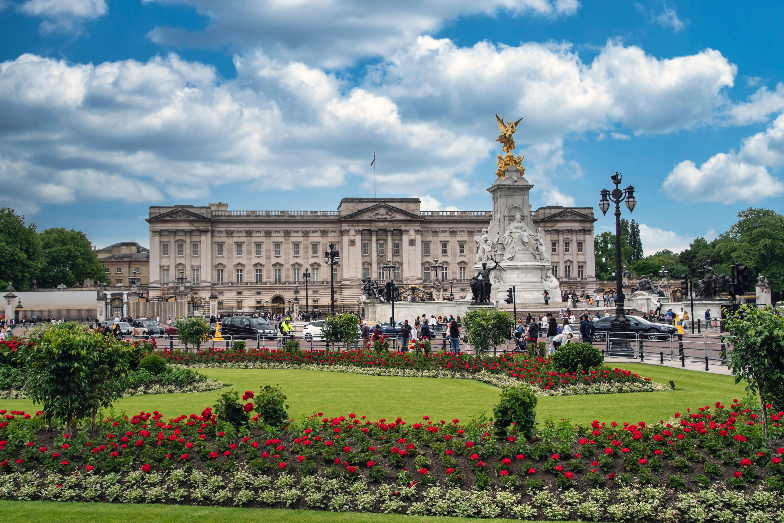

Discover Buckingham Palace!
A Free Guide

Buckingham Palace (Photo by ELG21 on Pixabay)
Welcome to the Buckingham Palace!
Buckingham Palace is a notorious landmark in the city of London. It serves as the official London residence of the British Monarch. The palace attracts millions each year to admire its magnificent architecture, rich history, and experiences such as the Changing of the Guard.
Why Visit?
Apart from being an iconic landmark of London, visitors can explore the palace. From its state rooms, works of art, and as well as its royal traditions. It offers insight into the culture and history of the British monarchy, making it one of London's most popular tourist attraction.
Quick Facts 👑
- It was originally known as Buckingham House
- There are over 700 rooms in the Buckingham Palace (Talk about rich!)
- The palace is famous for its 'Changing of the Guard' ceremony!
- The palace garden is the largest private garden in all of London.
Wanna learn more?
Head over to 'About'' to learn more about the Buckingham Palace!